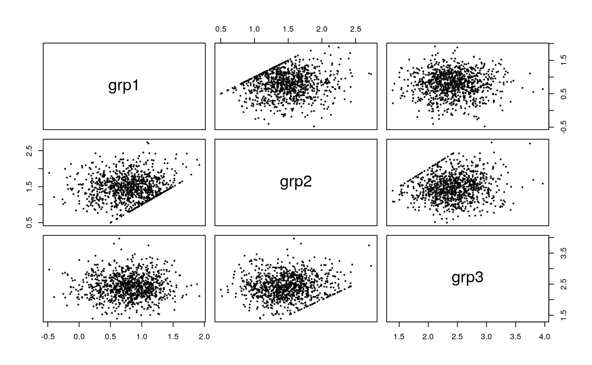

Simulation function for orlm and orgls objects
sim(object, n.sims) # S3 method for orlm sim(object, n.sims) # S3 method for orgls sim(object, n.sims)
| object | an object of class "orlm" or "orgls". |
|---|---|
| n.sims | number of simulation replications. |
a list with sets of simulated parameters.
Given the estimated coefficients of a orlm or orgls model, a set new parameters are generated. n.sims new sets of observations are generated based on the unrestricted model; these new datasets are used to estimate a new set of model coefficients incorporating the given order restrictions.
######################## ## Artificial example ## ######################## n <- 10 m <- c(1,1,2) dat <- data.frame(grp=as.factor(rep(1:length(m), each=n)), y=rnorm(n*length(m), rep(m, each=n), 1)) cm <- rbind(c(-1,1,0), c(0,-1,1)) fm <- orlm(y ~ grp-1, data=dat, constr=cm, rhs=rep(0,nrow(cm)), nec=0) b <- sim(fm, n.sims=1000)$coef pairs(t(b), cex=0.3)